Em 1920, o Dr. Edmund Jacobson desenvolveu uma técnica para aliviar o estresse chamada Relaxamento Muscular Progressivo.[1] Essa técnica consiste em tensionar e relaxar vários grupos musculares para gerar diversos efeitos benéficos, como ajudar a dormir, reduzir as dores do parto, ansiedade, depressão e melhorar dores de cabeça, estômago e fadiga.[2] Esse método é tão funcional que ajuda até a reduzir a fissura por cigarro![3] Utilizar visualização guiada e respirar profundamente potencializam os efeitos dessa técnica.
Escolha um momento em que não estiver sonolento. Para não dormir no meio da prática e aprender a utilizá-la durante o dia, o melhor é não tentá-la em um momento de sono.[4]
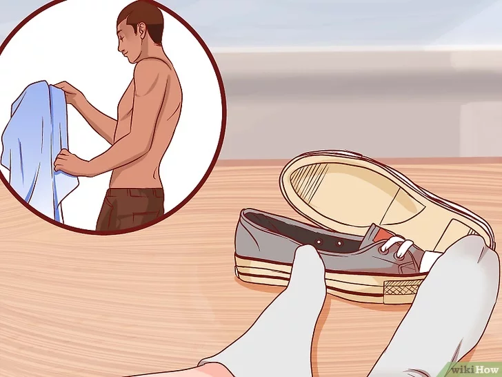Use roupas confortáveis e fique descalço. Não use roupas apertadas, prefira as mais folgadas para ter liberdade de movimentos. Além disso, tire os sapatos para conseguir tensionar e relaxar os pés.[5]
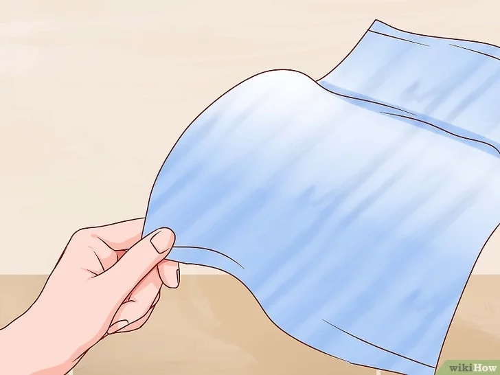Deixe um cobertor à mão. O relaxamento pode causar frio. Tenha um cobertor ou manta por perto para se cobrir caso isso aconteça; ficar aquecido o ajudará a relaxar ainda mais.[6]
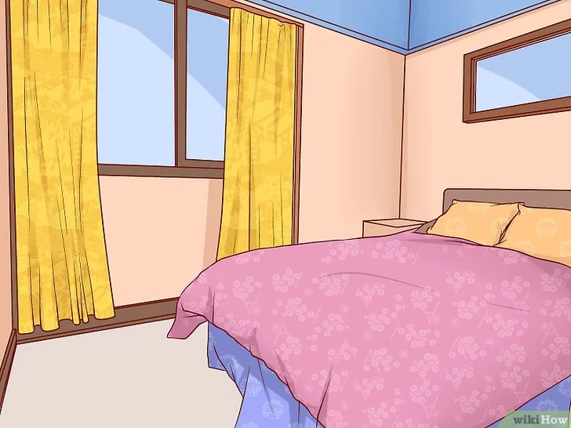Vá a um lugar tranquilo. Use um cômodo calmo e limpo de sua casa, se possível. Reduza a luminosidade e procure um lugar em que não haja barulhos altos e repentinos.[7][8]

Esforce-se para não ser interrompido. Uma sessão completa dura entre 10 e 15 minutos, não é muito tempo. Desligue o celular, tire o telefone fixo do gancho e peça para as pessoas que moram com você para não entrarem no cômodo durante esse tempo.
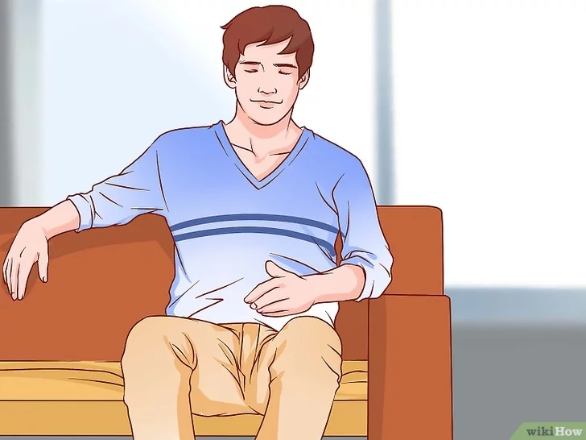Fique em uma posição confortável. O relaxamento pode ser feito em pé, sentado ou deitado. O ideal é sentar em uma poltrona ou cadeira reclinável, já que isso facilita relaxar sem dormir e também é melhor do que ficar em pé.[9] Assim que estiver pronto, feche os olhos, descruze as pernas e repouse as mãos no colo ou descanse-as ao lado do corpo.
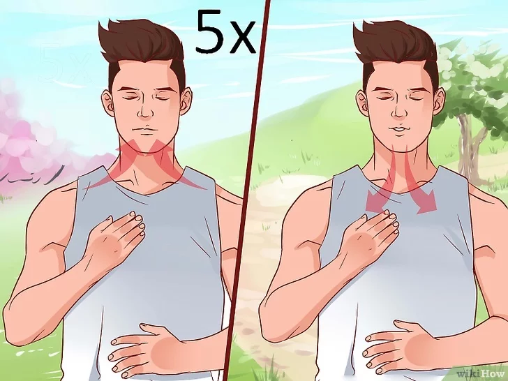Encerrada a preparação, respire profundamente cinco vezes. Respirar profundamente reduz a pressão arterial, desencadeando todo um processo de relaxamento e gerando sensação de bem estar.[10][11] Inspire profundamente, segure por quatro segundos e relaxe os músculos enquanto expira. Preste atenção ao seu abdômen inflando e esvaziando a cada respiração. Depois de cinco vezes você estará pronto para começar.[12]
Inspire enquanto tensiona os músculos. Comece com um grupo muscular por vez. Contraia esse grupo ao máximo por cinco segundos, tomando cuidado para não ir além dos limites e respire profundamente. O segredo está em conseguir tensioná-los com vigor, sem sentir dor ou causar lesões.[13]
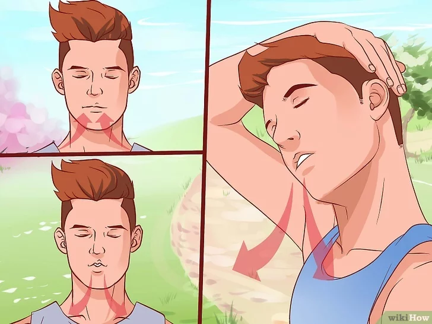Expire e relaxe ao mesmo tempo. Solte o ar devagar pela boca, liberando a tensão dos músculos rapidamente; o grupo trabalhado deverá ficar solto e maleável.[14]
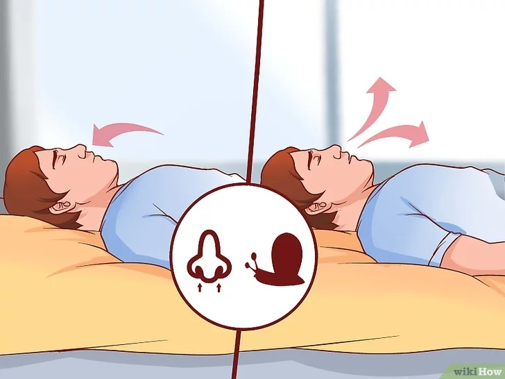Pause por 10 segundos antes de prosseguir para o próximo grupo. Não tenha pressa, faça o exercício devagar e com cuidado e respire vagarosamente nesse intervalo. A pausa entre cada parte do corpo é importante para ajudá-lo a relaxar.[15]
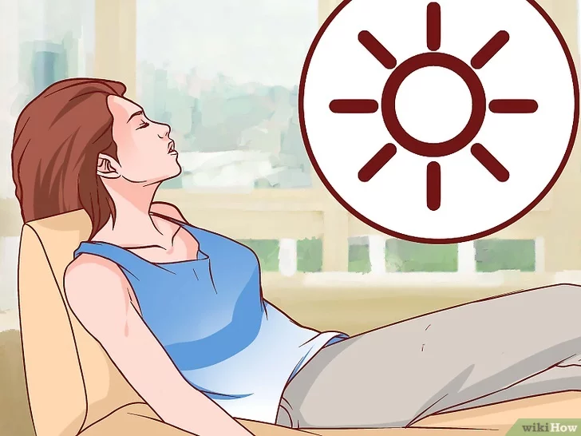Use a visualização. O calor está diretamente relacionado ao relaxamento. Dessa maneira, você pode intensificar os efeitos desse exercício imaginando os raios do sol batendo no grupo muscular que está sendo trabalhado. Você também pode se imaginar em um lugar tranquilo e seguro antes ou depois da sessão. Leia o passo “Utilizando a visualização guiada” descrito abaixo.[16]
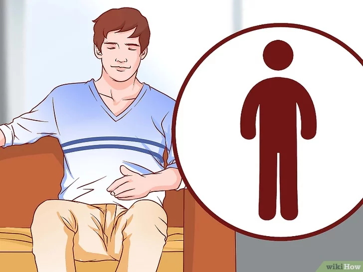Repita esses passos até que o corpo inteiro esteja relaxado. Comece por onde quiser, da cabeça para baixo ou dos pés para cima.
Comece pelos dedos dos pés. Respire profundamente pelo nariz, retraindo os dedos e tensionando a sola dos pés; segure por cinco segundos e solte. Deixe a tensão se esvair e compare essa sensação de relaxamento à anterior, de retesamento. Descanse por 10 segundos antes de continuar para as pernas.[18]
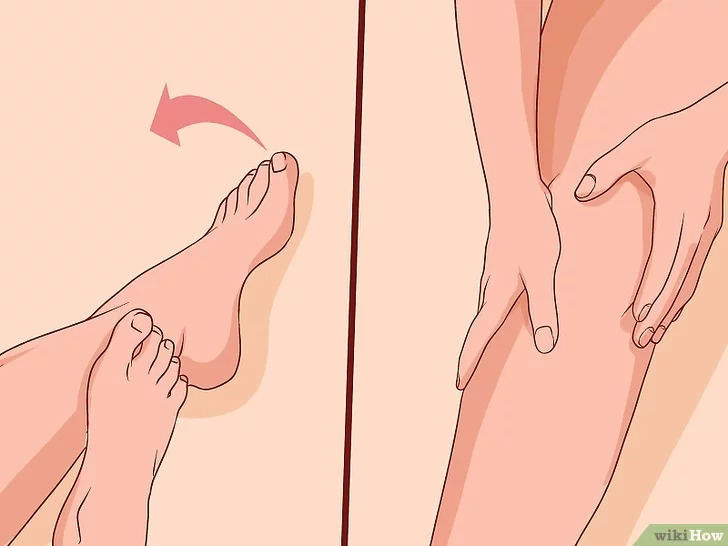Prossiga para as pernas. Tensione e relaxe os músculos das panturrilhas primeiro, depois os das coxas e enfim, todos juntos. Como dito anteriormente, inspire pelo nariz quando tensionar e expire pela boca quando soltar. Continue na seguinte ordem:[19]
Relaxe o abdômen. Respire normalmente antes de passar para o estômago e as costas e não se esqueça de pausar por 10 segundos entre cada grupo.[21]
Passe para a parte superior das costas e do peito. A essa altura, você provavelmente está bem relaxado e a respiração, lenta e regular. Segure a tensão por cinco segundos antes de relaxar.[22]
Prossiga para os ombros e pescoço. Encolha os ombros, como se quisesse encostá-los nas orelhas.[23] Ao mesmo tempo, coloque a cabeça para trás, para tensionar o pescoço também. A tensão nessa área é uma das causas mais comuns de dores de cabeça e torcicolo.[24][25] Podem ser necessárias duas ou três repetições para essa parte do corpo.
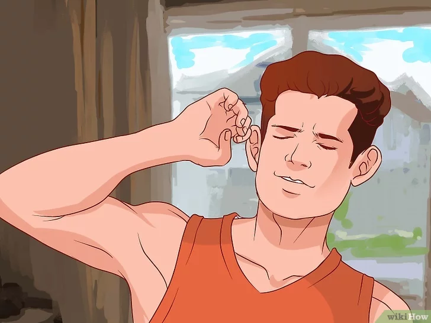Continue com os braços. Relaxar deve ser cada vez mais fácil agora. Trabalhando os músculos do braço, lembre-se de inspirar pelo nariz e expirar pela boca.
Encerre pelos músculos do rosto. Pode parecer estranho, mas o rosto é um dos lugares mais tensos do corpo, principalmente os músculos da mandíbula. Ao fim dessa parte, você terá acabado a sessão e se sentirá completamente relaxado.
Relaxe. Agora que você acabou, dê-se alguns minutos para curtir o relaxamento. Para aproveitar mais o momento, use a visualização guiada; se quiser dormir agora, não tem problema.
Potencialize os efeitos do relaxamento muscular progressivo com a visualização guiada. Contrair e relaxar os músculos ajuda a se livrar da tensão física, mas para resolver nós mentais, essa técnica é mais indicada. Ela tem se mostrado muito benéfica para melhorar o humor, reduzir a ansiedade e a fadiga.[34]
Escolha seu lugar seguro. Pense em um local (imaginário ou real) em que se sinta tranquilo e feliz. Não existe lugar “errado” mas, quando escolhê-lo, use-o sempre para facilitar a sessão, sem ficar mudando de cenário.[35] As opções mais comuns são:
Imagine-se nesse local. Sinta a tranquilidade à medida em que vê cada detalhe. Não se prenda somente à visão, use todos os sentidos; se imaginar um vale ensolarado por exemplo, visualize:[36]
Deixe a serenidade levar todos os pensamentos para longe. Quando um pensamento surgir, não lute contra ele, volte seu foco para os detalhes do lugar onde está.
Aproveite a serenidade. Agora você está relaxado, não há lugar em que prefira estar ou atividade que preferiria estar fazendo. Seu corpo e sua mente estão tranquilos.
Este artigo está disponível Aqui.